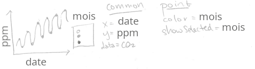
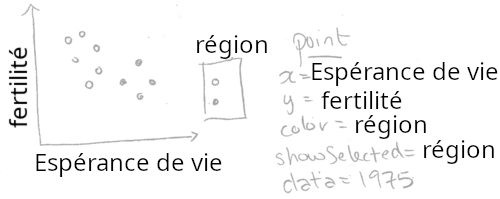
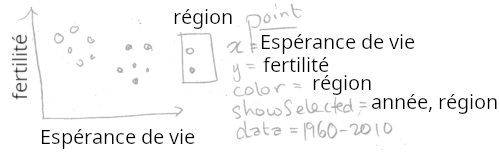

Ce chapitre explique showSelected, l’un des deux principaux mots-clés introduits par animint2 pour la visualisation interactive de données. Après avoir lu ce chapitre, vous serez en mesure de
Utiliser le mot-clé showSelected dans vos esquisses pour spécifier des geoms pour lesquels seul un sous-ensemble de données doit être tracé à la fois.
Utiliser les menus de sélection pour modifier le sous-ensemble de données tracées.
Spécifier des transitions fluides entre les sous-ensembles de données à l’aide de l’option duration et aes(key).
Créer des visualisations de données animées à l’aide de l’option time.
Esquisses avec showSelected
Dans le chapitre 2, nous avons expliqué comment vous pouvez plannifier les codes nécessaires pour créer une visualisation, à l’aide d’une esquisse qui comprend les éléments principaux (geoms, axes, légendes, données). Dans cette section, nous allons expliquer comment le mot-clé showSelected peut être utilisé dans les esquisses. Le mot-clé showSelected spécifie une variable à utiliser pour sélectionner un sous-ensemble de données. Chaque geom d’une visualisation de données possède son propre ensemble de données, et sa propre définition des variables showSelected. Cela signifie que des geoms différents peuvent spécifier des ensembles de données et des mots-clés showSelected différents pour afficher des sous-ensembles de données différents.
En fait, nous avons déjà utilisé le mot-clé showSelected, qui a été automatiquement créé par les légendes interactives que nous avons créées dans les deux chapitres précédents. Par exemple, considérons l’esquisse ci-dessous, de la courbe de Keeling du chapitre 1.

Esquisse de la courbe de Keeling
L’esquisse ci-dessus comprend showSelected=mois pour le geom_point ce qui signifie qu’il doit afficher le sous-ensemble de données pour les mois sélectionnés. En revanche, étant donné que geom_line n’inclut pas showSelected, il affiche toujours l’ensemble complet des données (quels que soient les mois sélectionnés).
Prenons un autre exemple : le dessin ci-dessous de la première visualisation de données de la banque mondiale, du chapitre 2.

Esquisse banque mondiale avec showSelected région
L’esquisse ci-dessus spécifie showSelected=région pour le geom_point, ce qui signifie qu’il doit afficher le sous-ensemble de données pour les régions sélectionnées.
Notez que le code que nous avons utilisé dans chapitre 2 ne spécifiait pas explicitement showSelected=région. Au lieu de cela, nous avons spécifié aes(color=région) et animint2 a automatiquement rajouté un mot-clé showSelected. En général, animint2 rajoute un mot-clé showSelected pour chaque variable utilisée dans une légende qualitative.
Cependant, le mot-clé showSelected n’est pas limité aux légendes qualitatives. Vous pouvez utiliser les mots-clés showSelected pour toutes les variables que vous souhaitez, en spécifiant explicitement les noms des variables dans l’argument showSelected du geom.
Chaque variable utilisée avec showSelected est traitée par animint2 comme une variable de sélection. Par exemple, la visualisation de la courbe de Keeling a une variable de sélection (mois), tout comme la visualisation de la Banque Mondiale (région). Pour chaque variable de sélection, animint2 stocke les valeurs actuellement sélectionnées. Lorsque la sélection change, animint2 met à jour le sous-ensemble de données affiché.
Chacune des visualisations esquissées ci-dessus ne comporte qu’une seule variable de sélection. Cependant, une visualisation de données peut comporter un nombre quelconque de variables de sélection. Dans la section suivante, nous allons étudier une visualisation des données de la Banque Mondiale, qui comporte des variables de sélection pour région et année.
Sélection de sous-ensembles avec menus
Considérons l’esquisse suivant, avec une variable showSelected de plus, et avec un différent ensemble de données.

Esquisse banque mondiale avec showSelected région et année
Notez qu’il y a deux variables showSelected : région et année. Notez également que les données sont spécifiées pour toutes les années (mais une seule année sera affichée à la fois, grâce au showSelected=année). Ci-dessous, nous traduisons l’esquisse en code R.
Notez que le code ci-dessus contient le mot-clé showSelected, ce qui est nouveau dans animint2, par rapport à ggplot2. Le mot-clé showSelected est ignoré lorsque le graphe est affiché comme ci-dessus, avec les fonctions d’affichage habituelles dans R, qui dessinent un nuage de points qui comprend toutes les années.
En revanche, donner le code ci-dessus comme argument pour animint() donne la visualisation interactive ci-dessous, qui dessine une année à la fois.
animint(nuage)
Notez que la visualisation ci-dessus comporte deux variables de sélection : région et année (color=région fait que région est automatiquement une variable showSelected). Chaque variable dispose d’un menu en bas qui peut être utilisé pour modifier la sélection en cours. Dans cette visualisation, ces menus sont affichés par défaut. Ils peuvent être masqués en cliquant sur le bouton “Hide selection menus”, et réaffichés en cliquant sur le bouton “Show selection menus”.
Les variables discrètes, telles que région, ont la sélection multiple par défaut, de sorte que plusieurs valeurs sont sélectionnées et affichées à la fois. Essayez de modifier la région sélectionnée dans la légende interactive et dans le menu de sélection. Lorsque vous modifiez la sélection à l’aide d’une des méthodes, la légende interactive et le menu de sélection sont tous les deux mis à jour, pour refléter la sélection actuelle.
Nous utilisons les termes “manipulation directe” et “manipulation indirecte” pour décrire ces différentes façons de modifier la sélection. La manipulation directe est généralement plus facile à comprendre, parce qu’il s’agit de cliquer sur les objets que l’on souhaite modifier dans le graphique. En revanche, les techniques de manipulation indirecte, telles que les menus, sont utiles dans d’autres cas (par exemple, sélection d’un pays par nom). Dans la visualisation ci-dessus, vous pouvez modifier la valeur de région en utilisant soit la légende, soit le menu. L’utilisation de la légende est une technique de manipulation plus directe, puisque la légende est dessinée plus près du nuage de points qui sera mis à jour.
D’autres variables de sélection, comme année, ont la sélection simple par défaut, de sorte qu’une seule valeur est sélectionnée et affichée à la fois. Essayez de modifier la valeur sélectionnée de la variable année, à l’aide du menu de sélection. Vous devriez voir le nuage de points se mettre à jour immédiatement pour afficher le taux de fertilité et l’espérance de vie de tous les pays au cours de l’année que vous avez sélectionnée.
Exercice multi-couche : ajoutez un autre geom à ce nuage de points interactif. Comme dans le Chapitre 2 vous pouvez utiliser un geom_text pour afficher le nom de chaque pays (facile), ou un geom_text pour afficher l’année sélectionnée (moyen), ou un geom_path pour afficher les données des 5 années précédentes (difficile). Astuce : utilisez showSelected=année dans tous les geoms.
Exercice multi-geom : ajoutez une série temporelle à la visualisation de données ci-dessus. Comme dans le Chapitre 2 vous pouvez utiliser un geom_line pour afficher le taux de fertilité de chaque pays, pour toutes les années. Ajoutez un geom_vline avec showSelected=année pour mettre en évidence l’année sélectionnée.
Transitions : l’option duration et aes(key)
Vous avez peut-être remarqué qu’il y a des boutons en bas de chaque visualisation de données créée par animint2. Essayez de cliquer sur le bouton “Show animation controls” ci-dessus. Ce tableau contient une ligne pour chaque variable de sélection. Les zones de texte indiquent le nombre de millisecondes utilisées pour les durées de transition après la mise à jour de chaque variable de sélection. Pour chaque variable de sélection, la durée de transition par défaut est 0, ce qui signifie que les données seront immédiatement placées à leur nouvelle position après la mise à jour de chaque variable.
Pour illustrer l’importance des durées de transition, essayez de changer la valeur de la durée de transition de la variable année à 2000. Ensuite, utilisez le menu pour modifier la valeur sélectionnée de la variable année. Vous devriez voir les points de données se déplacer lentement vers leurs nouvelles positions, sur une durée de 2 secondes.
Certaines transitions n’entraînent qu’un léger déplacement des points vers des positions proches (par exemple, 1979-1980). D’autres transitions entraînent un déplacement beaucoup plus important des points, vers des localisations plus éloignées (par exemple 1980-1981). Comment cela se fait-il ?
Les transitions fluides n’ont de sens que pour les points de données qui existent à la fois avant et après la modification de la sélection. Dans le code R ci-dessous, nous calculons un tableau de contingences des points de données qui peuvent être tracés dans chacune de ces trois années.
Le tableau de contingence ci-dessus montre clairement que 187 points peuvent être tracés en 1979 et 1980. Cependant, en 1981, il y a un point de données supplémentaire, correspondant à un pays pour lequel nous n’avions pas de données en 1980. Nous présentons ci-dessous les données de ce pays, le Kosovo.
subset(trois.ans, pays=="Kosovo")
iso2c country year fertility.rate life.expectancy population
5850 KV Kosovo 1979 NA NA 1491000
5851 KV Kosovo 1980 NA NA 1521000
5852 KV Kosovo 1981 4.5758 65.93268 1552000
GDP.per.capita.Current.USD 15.to.25.yr.female.literacy iso3c
5850 NA NA KSV
5851 NA NA KSV
5852 NA NA KSV
region capital longitude latitude
5850 Europe & Central Asia (all income levels) Pristina 20.926 42.565
5851 Europe & Central Asia (all income levels) Pristina 20.926 42.565
5852 Europe & Central Asia (all income levels) Pristina 20.926 42.565
income lending Region région
5850 Lower middle income IDA Europe & Central Asia Europe et Asie centrale
5851 Lower middle income IDA Europe & Central Asia Europe et Asie centrale
5852 Lower middle income IDA Europe & Central Asia Europe et Asie centrale
espérance.de.vie taux.de.fertilité année pays PIB.par.habitant.USD
5850 NA NA 1979 Kosovo NA
5851 NA NA 1980 Kosovo NA
5852 65.93268 4.5758 1981 Kosovo NA
alphabétisation revenu
5850 NA Revenu moyen bas
5851 NA Revenu moyen bas
5852 NA Revenu moyen bas
En effet, le tableau de contingence ci-dessus montre que le taux de fertilité et l’espérance de vie sont manquants pour le Kosovo en 1979-1980. Il n’est donc pas logique d’effectuer une transition en douceur pour des pays tels que le Kosovo, qui ne seraient pas tracés ni avant ni après la transition. Comment spécifier cela dans la visualisation de données ? Dans le code ci-dessous, nous utilisons aes(key=pays) pour spécifier que les pays doit être utilisée pour faire correspondre les points de données avant et après la modification de la sélection.
Le key dans le ggplot ci-dessus n’a de sens que pour la visualisation interactive des données, il est donc ignoré lorsqu’il est affiché avec les périphériques graphiques R habituels. Cependant, si nous affichons ce ggplot en utilisant animint2, la variable pays sera utilisée pour s’assurer que les durées de transition sont significatives. Pour spécifier une durée de transition par défaut pour la variable année nous utilisons l’option duration dans l’image de données ci-dessous.
L’option duration doit être une liste nommée. Chaque nom doit être une variable de sélection et chaque valeur doit spécifier le nombre de millisecondes à utiliser pour la durée de la transition lorsque la valeur sélectionnée de cette variable est modifiée.
Si vous cliquez sur “Show animation controls” (Afficher les contrôles d’animation) dans le graphique ci-dessus, vous verrez que la zone de texte pour la variable année est 2000, comme spécifié dans le code R. Si vous changez la sélection de 1980 à 1981, vous devriez voir une transition correcte.
De façon générale, aes(key) doit être spécifiée pour tous les geoms qui utilisent le mot-clé showSelected avec une variable qui apparaît dans l’option duration. Dans cet exemple, nous avons utilisé l’option duration pour spécifier une transition en douceur pour la variable année. Puisque nous utilisons showSelected=année dans geom_point nous avons également spécifié aes(key) pour ce geom.
Animation : l’option time
L’option time permet de spécifier une variable à utiliser pour l’animation. Dans le code en-dessous, on utilise l’option time pour préciser année comme variable d’animation, avec mises à jour tous les 2000 millisecondes.
On dit que la visualisation en-dessus est animée, parce que la sélection pour année va changer tous les deux secondes.
Exercice : réalisez une visualisation de données animée qui n’utilise PAS de transitions fluides. Indice : créez une liste de ggplots qui possède l’option time mais pas l’option duration.
Résumé du chapitre et exercices
Ce chapitre a expliqué le mot-clé showSelected, les menus de sélection, les transitions et l’animation.
Exercices :
Réaliser une version améliorée de vis.alignée du chapitre précédent. Au lieu de fixer l’année à 1975, utilisez showSelected=année pour que l’utilisateur puisse sélectionner une année. Ajoutez des geoms qui affichent l’année sélectionnée : a geom_text sur le nuage de points, et un geom_vline sur la série chronologique.
Traduisez l’un des exemples de library(animation) en animint2. Indice : dans le code de library(animation), il y a toujours une boucle for sur l’option time. Au lieu d’appeler une fonction d’affichage à l’intérieur de la boucle for, utilisez l’idiome liste de tableaux de données pour stocker les données qui doivent être tracées. Utilisez ensuite ces données avec showSelected pour créer des ggplots, et les afficher avec animint2.
Ensuite, Chapitre 4 explique les clickSelects qui indique un geom sur lequel on peut cliquer pour mettre à jour une variable de sélection.